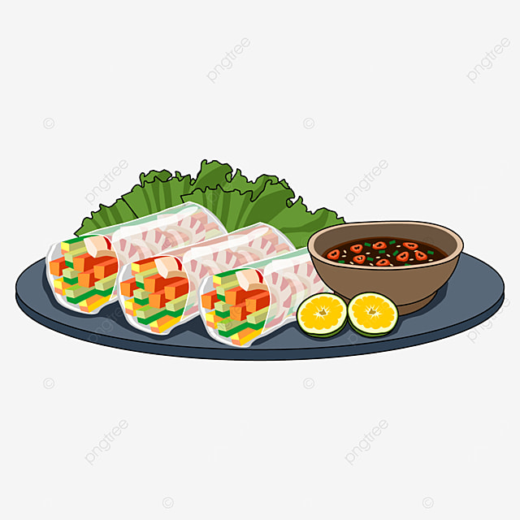

Home

Fresh Spring Rolls
Description
These spring rolls are a refreshing change from the usual fried variety, and have become a family favorite.
They are great as a cool summertime appetizer,
and are delicious dipped in one or both of the sauces.
Ingredients
- 2 ounces rice vermicelli)
- 8 rice wrappers (8.5 inch diameter)
- 8 large cooked shrimp - peeled, deveined and cut in half
- 1 ⅓ tablespoons chopped fresh Thai basil
- 3 tablespoons chopped fresh mint leaves
- 3 tablespoons chopped fresh cilantro
- 2 leaves lettuce, chopped
- 4 teaspoons fish sauce
- ¼cup of water
- 2 tablespoons fresh lime juice
- 1 clove garlic, minced
- 2 tablespoons white sugar
- ½ teaspoon garlic chili sauce
- 3 tablespoons hoisin sauce
- 1 teaspoon finely chopped peanuts
Steps
- Bring a medium saucepan of water to boil. Boil rice vermicelli 3 to 5 minutes, or until al dente, and drain. .
- Fill a large bowl with warm water.
Dip one wrapper into the hot water for 1 second to soften.
Lay wrapper flat. In a row across the center,
place 2 shrimp halves, a handful of vermicelli,
basil, mint, cilantro and lettuce,
leaving about 2 inches uncovered on each side.
Fold uncovered sides inward, then tightly roll the wrapper,
beginning at the end with the lettuce.
Repeat with remaining ingredients.
- In a small bowl, mix the fish sauce, water, lime juice, garlic, sugar and chili sauce.
- In another small bowl, mix the hoisin sauce and peanuts.
- Serve rolled spring rolls with the fish sauce and hoisin sauce mixtures.